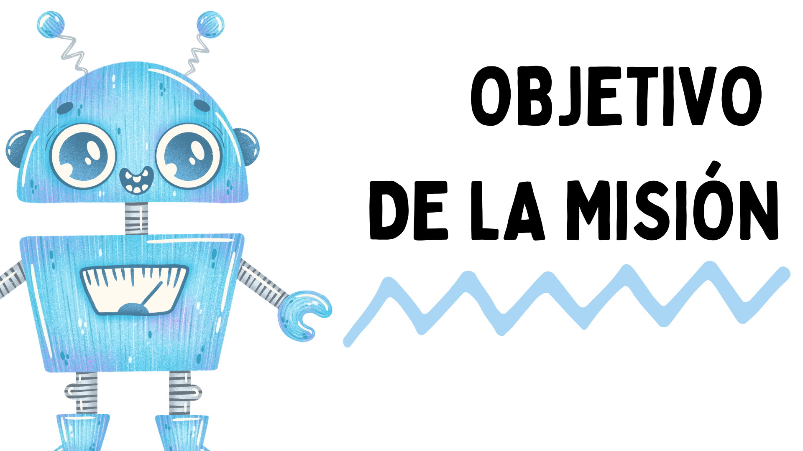
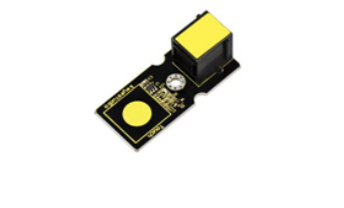
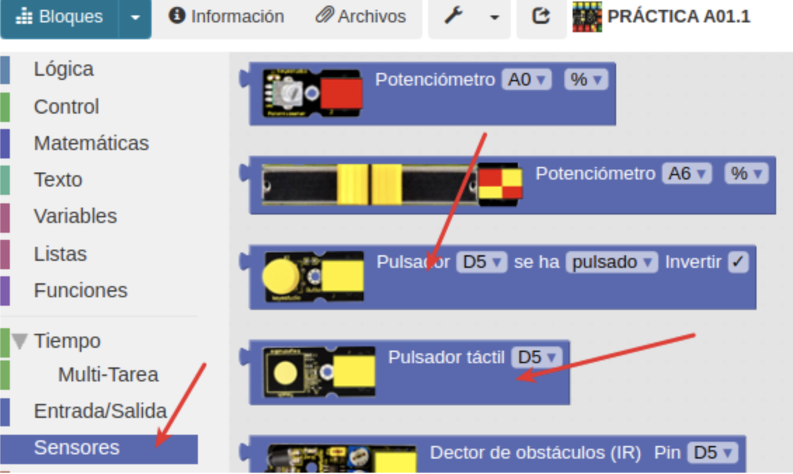
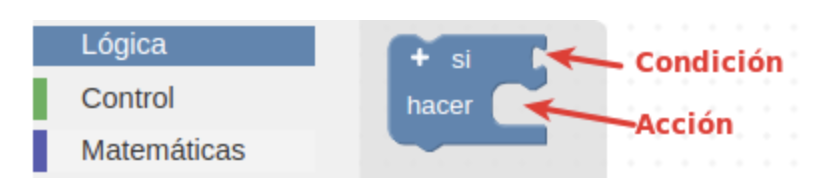
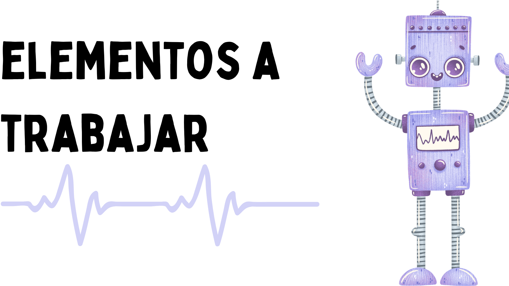
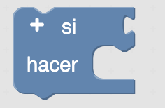
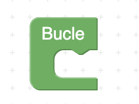
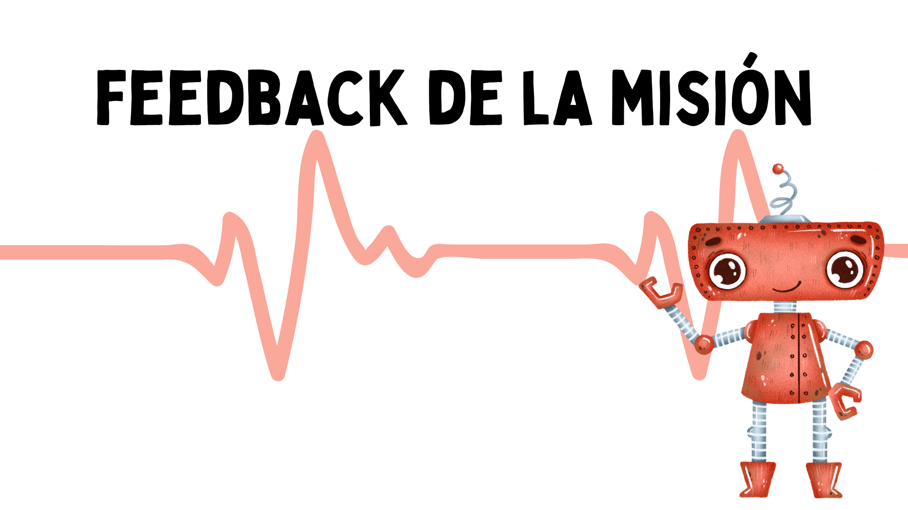
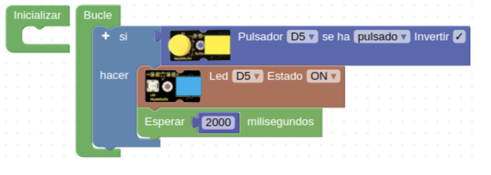
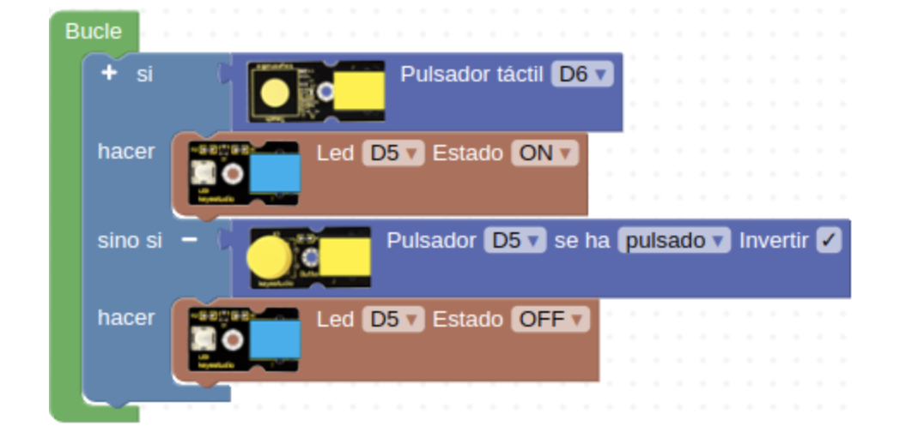

El objetivo de esta misión es utilizar un pulsador para encender el led utilizado en la primera misión. Un pulsador es un sensor digital, que tiene dos estados. Cuando se presiona el botón, emite una señal de nivel alto, es decir, 5V. En cambio, cuando se suelta el botón, emite una señal de nivel bajo: 0V.

Pulsador.
Pulsador táctil.
Los dos pulsadores son sensores, por tanto, los encontraremos en el apartado "Sensores". Siempre se conectan a los puertos digitales teniendo especial atención en el número en el que lo conectemos.

También empezaremos a hacer uso de las funciones de "Lógica", como la condicional: "si… hacer". Este bloque de programación es uno de los pilares fundamentales en el mundo de la programación, puesto que permite evaluar estados, y según la condición, programar acciones, es decir tomar decisiones.


- Entorno de programación por bloques ArduinoBlocks
- Sensores: pulsador
- Actuadores: led
- Lógica: condicionales.
|  |  |

Si hacemos clic en el pulsador el LED se enciende durante 2 segundos.

Programa pulsador táctil mas LED
Si hacemos clic en el pulsador táctil se enciende el LED. Sin embargo, si hacemos clic en el otro pulsador, se apaga.
